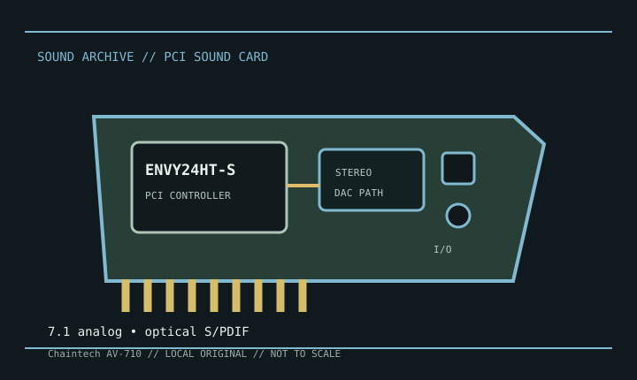

[ INDIVIDUAL MODEL // SOUND HARDWARE ]
Chaintech AV-710
The AV-710 is a conventional PCI card whose Envy24HT-S controller and board-level analog implementation have made it a popular legacy PC audio device. The green stereo jack’s higher-grade DAC path is a documented configuration detail; it should not be generalized to all outputs.

Detailed specifications
| Exact model / scope | Chaintech AV-710 PCI sound card. Identify the exact PCB/board revision; board-level codec and output behavior can vary across production runs. |
|---|---|
| Bus / host | Conventional PCI card; it is not a PCI Express device. Installation needs a legacy PCI slot and compatible OS driver. |
| Controller / conversion | VIA Envy24HT-S (ICE1721/ICE1724 driver family) audio controller. Product revisions use a multichannel codec and a separate stereo DAC path; the well-known high-quality stereo output is tied to the designated rear stereo jack and driver routing. |
| Connectors / I/O | Rear analog outputs support multichannel speaker configurations; line and microphone inputs and optical S/PDIF output are documented. Confirm the jack assignment in the card guide and software panel. |
| Formats / routing | Envy24HT-S supports high-resolution audio paths, but available sample rates/channel combinations depend on the board codec and selected jack/driver mode. Do not infer identical DAC performance for every channel. |
| Drivers / operating systems | The original Chaintech driver package targets legacy Windows. Linux support is available through the community ALSA ICE1724 driver for supported boards; exact AV-710 routing can require model-specific configuration. |
Compatibility & preservation
Record the PCB revision and driver control-panel settings, especially the chosen stereo-output mode. Test the designated stereo jack separately from the surround bank and retain a copy of the working legacy driver or ALSA configuration.
- Photograph the model marking, PCB revision, and all included brackets or cables before service.
- Save the matching driver, manual, and working host configuration; bus fit alone does not establish driver compatibility.
- Use the manufacturer’s model-specific pinout and routing diagram before connecting line, microphone, digital, or multichannel outputs.
Sources & documentation
- ALSA Project — ICE1724 / Envy24 driver matrixLinux driver matrix for PCI devices using the Envy24/ICE1724 family, including configuration context.
- Internet Archive — Chaintech AV-710 manual searchArchive catalog search for scans of the model’s original user guide; compare the result with the board revision.